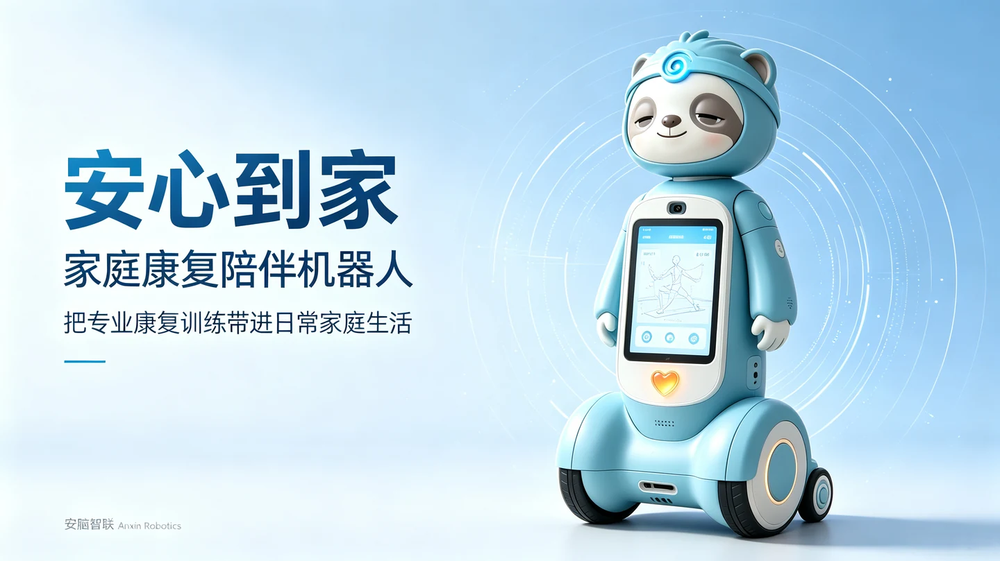
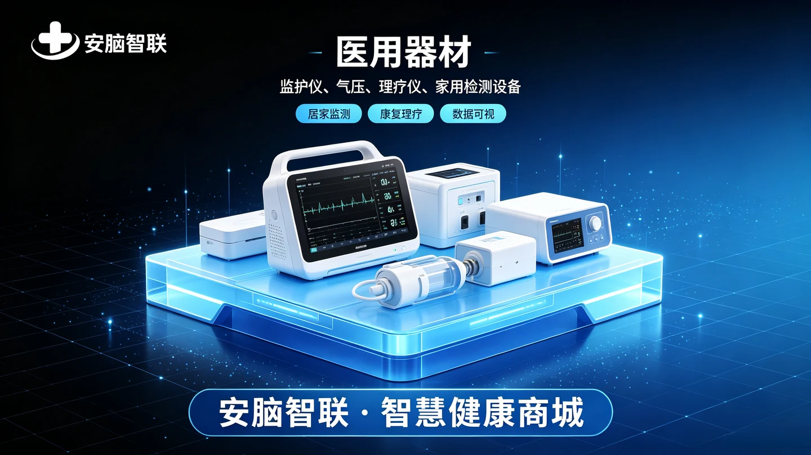

评估
记录动作表现，了解当前康复状态。


01 / 05 CONNECTED SOLUTIONS
覆盖患者、专家与机构，让专业服务从院内延伸到居家。
01 / FOR PATIENTS
通过手机摄像头开展居家评估与训练，连接专业指导、训练反馈和康复进度。
02 / FOR PROFESSIONALS
查看训练记录，审核计划并持续随访。
03 / FOR ORGANIZATIONS
衔接院内评估和院后训练，统一协作流程。

04 / SMART REHABILITATION HARDWARE
以手机视觉训练为基础，围绕家庭康复陪伴机器人构建训练指导、动作交互与日常陪伴的一体化体验，连接患者、家属与专业服务。

05 / SMART HEALTH MARKETPLACE
整合康复辅具、医用器材、护理耗材与专业上门服务，为医院、家庭和机构提供购买、租赁与服务支持，让康复资源更便捷地融入日常。

ONE CONTINUOUS JOURNEY
记录动作表现，了解当前康复状态。
专业人员制定与复核训练安排。
通过游戏交互，完成日常训练任务。
汇总训练记录，为训练方案调整提供参考。
从一次交流开始，找到适合您的产品与合作方式。